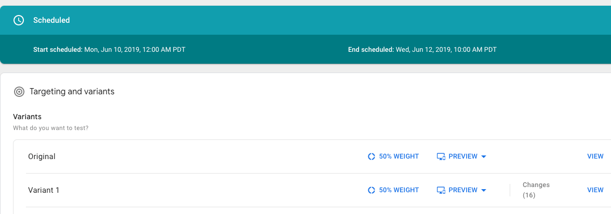
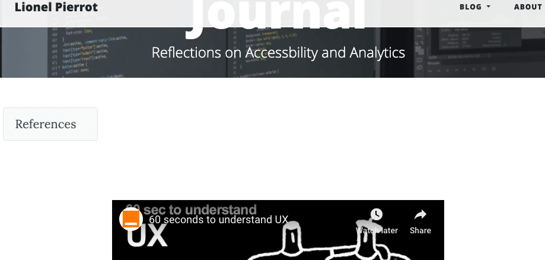
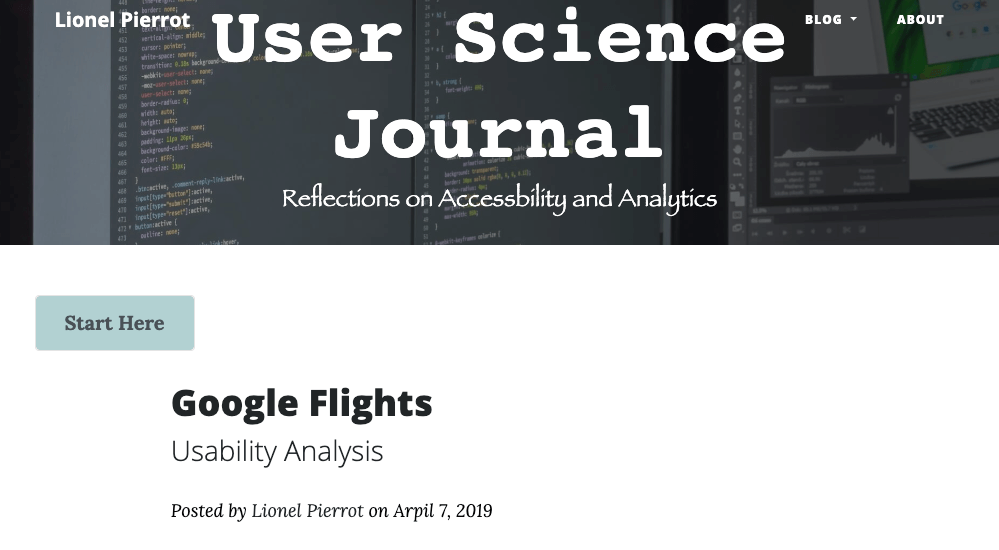
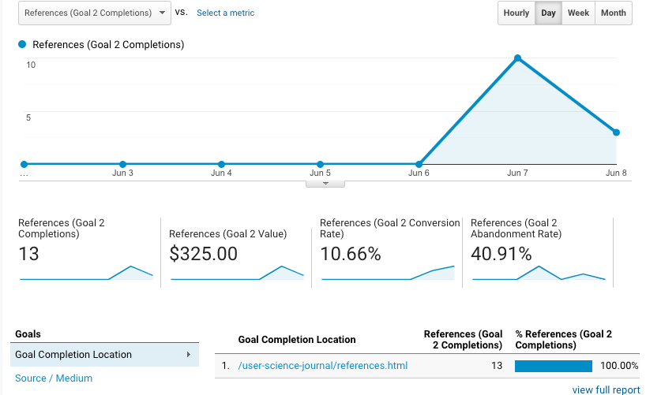

Last week I shared the URL to my User Science Journal with a couple of friends to drive traffic to my website and increase my conversion goal. In doing so, a few users responded with valuable feedback on usability issues they encountered going through the website. So for this, I am going to test the index page on my website, and the call to action button on the homepage using the A/B testing tool to create a variant page with a few changes on it. I am going to change the index.html page since it the one that I am most users engage with and also has the click event to send users to the references page.
A/B Test set up
This test I used Google Optimize and the set process was straight forward. I set the test to run for two days.
 Google OptimizeSince I received the feedback on the home page, I wanted to redesign the homepage and make it a little simpler. I have a Youtube video that a lot of people suggested changing.
 Index.html PageI agree with the friend who gave me this feedback. For one the video starts at 46 seconds, it doesn't play the whole video (I should have probably tested this before posting it). The video don't really server anything, I initially wanted to put an event tag on it but changed my mind later on.
 Variant1 PageOn the variant1 test page, I made a few changes to the text on the navbar, added color to the reference onclick link and changed the text to have people click on it so that Google Analytics can register the event click as a goal completion. I also removed the YouTube video altogether and added previous posts.
 Goal conversion rateBack to Google Analytics, I have been getting an increase in conversion goal rate, but with this test in place, I am hoping to increase traffic to the references page that I set up for GA to register goal conversions.
Conclsion
GGoogle Optimize is a fascinating tool, I have set up this test to run for a few days, and I plan on sending as many users as possible to my blog and compare the data.